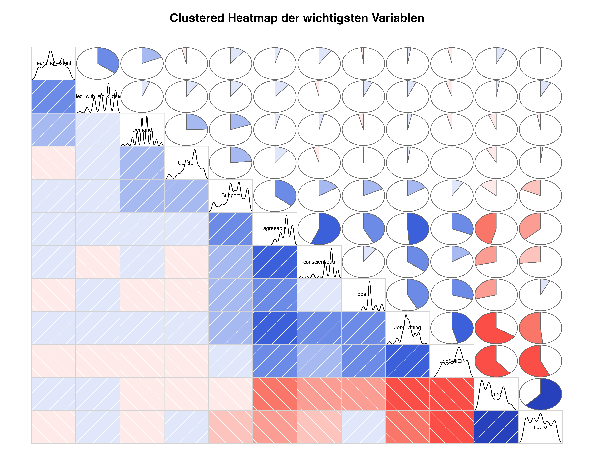

![]()
library(tidyverse)
library(janitor)
library(lme4)
library(equatiomatic)
library(tidyr)
# Daten einlesen
DatenESM <- read.csv2("data/Daten-ESM-Situationen.csv", na = "NA", dec = ",")
DatenSurvey <- read.csv2("data/Daten-Survey-Personen.csv", na = "NA", dec = ",")
# full join der Daten
DatenML <- full_join(DatenESM, DatenSurvey, by = "Interviewer")
# Leere Zeilen und Spalten entfernen
DatenML <- remove_empty(DatenML, which = c("rows", "cols"))
# Skalenbildung
DatenML <- DatenML |>
mutate(BSW3r = 6 - BSW3, BSW6r = 6 - BSW6) |>
rowwise() |>
mutate(
Demand = mean(c(Demand1, Demand2), na.rm = T),
Control = mean(c(Control1, Control2), na.rm = T),
Support = mean(c(Support1, Support2), na.rm = T),
DCS_interaction = Demand * Control * Support,
JobSelfEff = mean(c(BSW1, BSW2, BSW3r, BSW4, BSW5, BSW6r), na.rm = TRUE),
JobCrafting = mean(
c(
JCQ1,
JCQ2,
JCQ3,
JCQ4,
JCQ5,
JCQ6,
JCQ7,
JCQ8,
JCQ9,
JCQ10,
JCQ11,
JCQ12,
JCQ13,
JCQ14,
JCQ15
),
na.rm = TRUE
)
) |>
ungroup()Mehrebenenmodellierung von EMA-Daten
1 Multi-Level Daten als »nuisance« oder »interesting phenomenom«
In ihrem Klassiker »Multilevel analysis: An introduction to basic and advanced multilevel modeling« unterscheiden Tom Snijders und Roel Bosker zwei Anlässe von Multi-Level-Modellierungen »multi-level as a nuisance« und »multi-level as an interesting phenomenon. Mit ersterem ist gemeint, dass man eigentlich an Single-Level Phänomenen interessiert ist aber halt Abhängigkeiten der Residuen hat. Mit zweiterem ist gemeint, dass man tatsächlich an der Varianz von Regressionskoeffizienten interessiert ist.
Ist die Clusterstruktur der Daten nur ein »nuisance« sind hierarchische Modelle (a.k.a Mehrebenenmodelle, a.k.a. Mixed-Effects-Modelle, a.k.a. Mixed Effects Modelle, a.k.a. Random Effects Model) oft nur die zweite Wahl (für interessante Alternativen siehe McNeish, Stapleton, & Silverman (2017)).
In der EMA-Forschung ist es häufig so, dass man an der Varianz von Regressionskoeffizienten interessiert ist, daher werden wir im Folgenden verstärkt die zweite Kategorie betrachten.
2 Datenbeispiel
Wir verwenden hier die Daten von Rausch & Seifried (Rausch & Seifried, 2023), die u.a. Effekte von Demand und Control auf perceived learning untersuchen. Es handelt sich um eine EMA-Studie, bei der 49 Versicherungsagenten 405 Arbeitssituationen beschrieben haben.
2.1 Datenimport und -wrangling
2.2 Correllogram als geordnete Heatmap
DatenML |>
select(
learning_extent,
satisfied_with_work_outcome,
Demand,
Control,
Support,
JobSelfEff,
JobCrafting,
neuro,
intro,
open,
agreeable,
conscientious
) %>%
corrgram::corrgram(
order = TRUE,
lower.panel = corrgram::panel.shade,
upper.panel = corrgram::panel.pie,
diag.panel = corrgram::panel.density,
main = "Clustered Heatmap der wichtigsten Variablen"
)
2.3 Typische Verteilungsstatistiken
Within-Person-Statistiken
DatenML |>
select(
learning_extent,
satisfied_with_work_outcome,
Demand,
Control,
Support,
JobSelfEff,
JobCrafting,
neuro,
intro,
open,
agreeable,
conscientious
) %>%
pivot_longer(
cols = everything(),
names_to = "item",
values_to = "values"
) |>
group_by(item) %>%
summarize(
mean = mean(values, na.rm = TRUE),
med = median(values, na.rm = TRUE),
sd = sd(values, na.rm = TRUE),
skew = moments::skewness(values, na.rm = TRUE),
rmssd = psych::rmssd(values, na.rm = TRUE)
)# A tibble: 12 × 6
item mean med sd skew rmssd
<chr> <dbl> <dbl> <dbl> <dbl> <dbl>
1 Control 3.54 3.5 0.973 -0.713 1.23
2 Demand 3.22 3.5 0.817 -0.241 1.07
3 JobCrafting 4.22 4.2 0.585 -0.249 0.347
4 JobSelfEff 4.09 4.33 0.651 -0.345 0.329
5 Support 3.45 3.5 1.14 -0.509 1.30
6 agreeable 5.89 6 1.01 -1.20 0.637
7 conscientious 5.34 6 1.40 -1.34 0.714
8 intro 2.48 2 1.31 0.382 0.658
9 learning_extent 3.50 3 1.52 -0.0197 1.73
10 neuro 2.92 3 1.40 0.0855 0.686
11 open 5.27 5 0.943 -0.109 0.589
12 satisfied_with_work_outcome 4.45 5 1.28 -0.599 1.69 Betwen-Person-Statistiken
DatenML |>
select(
learning_extent,
satisfied_with_work_outcome,
Demand,
Control,
Support,
Interviewer
) %>%
pivot_longer(
cols = c(
learning_extent,
satisfied_with_work_outcome,
Demand,
Control,
Support
),
names_to = "item",
values_to = "values"
) |>
group_by(Interviewer, item) %>%
summarize(
imean = mean(values, na.rm = TRUE),
imed = median(values, na.rm = TRUE),
isd = sd(values, na.rm = TRUE),
iskew = moments::skewness(values, na.rm = TRUE),
irmssd = psych::rmssd(values, na.rm = TRUE)
) %>%
ungroup() %>%
select(-Interviewer) %>%
group_by(item) %>%
skimr::skim()`summarise()` has regrouped the output.
ℹ Summaries were computed grouped by Interviewer and item.
ℹ Output is grouped by Interviewer.
ℹ Use `summarise(.groups = "drop_last")` to silence this message.
ℹ Use `summarise(.by = c(Interviewer, item))` for per-operation grouping
(`?dplyr::dplyr_by`) instead.| Name | Piped data |
| Number of rows | 240 |
| Number of columns | 6 |
| _______________________ | |
| Column type frequency: | |
| numeric | 5 |
| ________________________ | |
| Group variables | item |
Variable type: numeric
| skim_variable | item | n_missing | complete_rate | mean | sd | p0 | p25 | p50 | p75 | p100 | hist |
|---|---|---|---|---|---|---|---|---|---|---|---|
| imean | Control | 0 | 1.00 | 3.47 | 0.55 | 2.25 | 3.20 | 3.61 | 3.83 | 4.50 | ▃▂▆▇▂ |
| imean | Demand | 0 | 1.00 | 3.25 | 0.47 | 2.25 | 2.97 | 3.22 | 3.52 | 4.40 | ▂▇▇▃▂ |
| imean | Support | 0 | 1.00 | 3.43 | 0.82 | 1.50 | 2.93 | 3.50 | 3.85 | 5.00 | ▂▃▆▇▃ |
| imean | learning_extent | 0 | 1.00 | 3.55 | 1.13 | 1.33 | 2.68 | 3.30 | 4.47 | 6.00 | ▂▇▅▃▂ |
| imean | satisfied_with_work_outcome | 0 | 1.00 | 4.39 | 0.91 | 2.00 | 3.77 | 4.61 | 4.93 | 6.00 | ▁▂▆▇▃ |
| imed | Control | 0 | 1.00 | 3.54 | 0.63 | 2.00 | 3.00 | 3.50 | 4.00 | 5.00 | ▂▃▇▇▁ |
| imed | Demand | 0 | 1.00 | 3.28 | 0.52 | 2.25 | 3.00 | 3.12 | 3.50 | 4.50 | ▂▇▆▅▁ |
| imed | Support | 0 | 1.00 | 3.47 | 0.97 | 1.00 | 3.00 | 3.50 | 4.00 | 5.00 | ▂▁▆▇▃ |
| imed | learning_extent | 0 | 1.00 | 3.64 | 1.36 | 1.00 | 3.00 | 3.00 | 5.00 | 6.00 | ▃▇▂▃▂ |
| imed | satisfied_with_work_outcome | 0 | 1.00 | 4.53 | 1.07 | 2.00 | 4.00 | 4.75 | 5.00 | 6.00 | ▁▃▇▇▅ |
| isd | Control | 2 | 0.96 | 0.79 | 0.32 | 0.00 | 0.58 | 0.79 | 1.02 | 1.37 | ▁▅▇▅▅ |
| isd | Demand | 2 | 0.96 | 0.72 | 0.33 | 0.00 | 0.50 | 0.67 | 0.86 | 1.77 | ▂▇▆▁▁ |
| isd | Support | 2 | 0.96 | 0.80 | 0.46 | 0.00 | 0.41 | 0.80 | 1.04 | 2.08 | ▇▇▇▅▁ |
| isd | learning_extent | 2 | 0.96 | 1.11 | 0.58 | 0.00 | 0.71 | 1.08 | 1.43 | 2.52 | ▂▅▇▃▁ |
| isd | satisfied_with_work_outcome | 2 | 0.96 | 1.02 | 0.51 | 0.00 | 0.66 | 1.15 | 1.26 | 2.24 | ▂▅▇▃▁ |
| iskew | Control | 3 | 0.94 | -0.20 | 0.78 | -2.10 | -0.78 | 0.00 | 0.31 | 1.50 | ▁▆▇▇▂ |
| iskew | Demand | 3 | 0.94 | 0.03 | 0.51 | -1.00 | -0.31 | 0.00 | 0.25 | 1.34 | ▂▇▇▅▁ |
| iskew | Support | 5 | 0.90 | -0.35 | 0.87 | -2.67 | -0.97 | -0.01 | 0.23 | 0.97 | ▁▂▃▇▅ |
| iskew | learning_extent | 5 | 0.90 | -0.10 | 0.80 | -1.59 | -0.69 | 0.00 | 0.48 | 1.27 | ▃▅▇▇▅ |
| iskew | satisfied_with_work_outcome | 6 | 0.88 | -0.44 | 0.89 | -2.67 | -1.03 | -0.28 | 0.03 | 1.15 | ▂▂▅▇▃ |
| irmssd | Control | 2 | 0.96 | 1.12 | 0.51 | 0.00 | 0.71 | 1.09 | 1.43 | 2.26 | ▂▆▇▃▃ |
| irmssd | Demand | 2 | 0.96 | 1.01 | 0.47 | 0.00 | 0.72 | 0.91 | 1.27 | 2.50 | ▂▇▆▁▁ |
| irmssd | Support | 2 | 0.96 | 1.08 | 0.65 | 0.00 | 0.63 | 0.98 | 1.58 | 2.92 | ▅▇▃▃▁ |
| irmssd | learning_extent | 2 | 0.96 | 1.50 | 0.87 | 0.00 | 1.00 | 1.46 | 1.80 | 4.12 | ▅▇▆▁▁ |
| irmssd | satisfied_with_work_outcome | 2 | 0.96 | 1.41 | 0.73 | 0.00 | 0.89 | 1.56 | 1.94 | 2.94 | ▃▆▇▆▃ |
3 Multi-Level Daten als »nuisance«
Genestete Daten können auch wenn man sich nicht für die Varianz von Regressionskoeffizienten über Cluster hinweg interessiert, zu einem Problem werden, da die Residuen nicht mehr unabhängig sind wie für die Berechnung der Inferenzstatistk bei der multiple Regression angenommen wird. Wie robust bzw. unrobust die multiple Regression gegenüber Verletzungen der Unabhängigkeitsannahme ist, hängt von der Stärke der Clusterung (ICC) und der Größe der Cluster ab. In der Praxis kann es schon bei moderater Clusterung zu verzerrten Standardfehlern und damit zu falschen Schlussfolgerungen kommen wie folgende Shiny-App (File bitte in RStudio öffnen und ausführen).
4 Mehrebenenmodelle als Partial Pooling
Interessiert man sich für die Varianz von Regressionskoeffizienten über Cluster hinweg, so sind hierarchische Modelle (a.k.a Mehrebenenmodelle, a.k.a. Mixed-Effects-Modelle, a.k.a. Mixed Effects Modelle, a.k.a. Random Effects Model) die erste Wahl. Diese werden oft als Kompromiss zwischen No-Pooling (separate Regression pro Cluster) und Complete-Pooling (ein Modell für alle) beschrieben. Dabei wird diese Kompromissbildung durch die Größe der Cluster und die Stärke der Clusterung (ICC) bestimmt:
- Je größer das Cluster (bei gleichem ICC), desto stärker wird die Random-Effekt-Schätzung für dieses Cluster von den Daten dieses Clusters bestimmt. Dadurch sind die Random Effekt-Schätzungen für große Cluster näher an den No-Pooling-Schätzungen und die Random Effekt-Schätzungen für kleine Cluster näher an den Complete-Pooling-Schätzungen.
- Je höher die Clusterung (ICC bei gleicher Clustergröße), desto stärker wird die Random-Effekt-Schätzung durch die Daten des Clusters bestimmt.
Warning: Removed 2 rows containing missing values or values outside the scale range
(`geom_abline()`).
Wichtig ist, dass aus im Modell nur die Regressionskoeffizienten sowie eine Streuung dieser geschätzt wird. Die Steigungen der Random Effect Regressionsgeraden pro Cluster sind nicht Teil der Modellschätzung sondern werden post-hoc mit Empirical Bayes geschätzt.
5 Einfache Mehrebenenmodelle
5.1 Das Random-Intercept-Only-Modell
mod0 <- lmer(
learning_extent ~ 1 +
(1 | Interviewer),
data = DatenML
)
summary(mod0)Linear mixed model fit by REML ['lmerMod']
Formula: learning_extent ~ 1 + (1 | Interviewer)
Data: DatenML
REML criterion at convergence: 1382.1
Scaled residuals:
Min 1Q Median 3Q Max
-2.65089 -0.68055 0.09196 0.55797 2.95979
Random effects:
Groups Name Variance Std.Dev.
Interviewer (Intercept) 0.9502 0.9748
Residual 1.4563 1.2068
Number of obs: 405, groups: Interviewer, 48
Fixed effects:
Estimate Std. Error t value
(Intercept) 3.5431 0.1603 22.11extract_eq(mod0, use_re = TRUE, wrap = TRUE)\[ \begin{aligned} \operatorname{learning\_extent}_{i} &\sim N \left(\alpha_{j[i]}, \sigma^2 \right) \\ \alpha_{j} &\sim N \left(\mu_{\alpha_{j}}, \sigma^2_{\alpha_{j}} \right) \text{, for Interviewer j = 1,} \dots \text{,J} \end{aligned} \]
5.2 Das Random-Intercept-Modell mit einem Prädiktor
mod1 <- lmer(
learning_extent ~ 1 + satisfied_with_work_outcome + (1 | Interviewer),
data = DatenML
)
summary(mod1)Linear mixed model fit by REML ['lmerMod']
Formula: learning_extent ~ 1 + satisfied_with_work_outcome + (1 | Interviewer)
Data: DatenML
REML criterion at convergence: 1350.1
Scaled residuals:
Min 1Q Median 3Q Max
-2.5301 -0.5871 0.1019 0.5635 3.2104
Random effects:
Groups Name Variance Std.Dev.
Interviewer (Intercept) 0.7497 0.8659
Residual 1.3546 1.1639
Number of obs: 405, groups: Interviewer, 48
Fixed effects:
Estimate Std. Error t value
(Intercept) 2.16437 0.26615 8.132
satisfied_with_work_outcome 0.31273 0.05071 6.167
Correlation of Fixed Effects:
(Intr)
stsfd_wth__ -0.839extract_eq(mod1, use_re = TRUE, wrap = TRUE)\[ \begin{aligned} \operatorname{learning\_extent}_{i} &\sim N \left(\alpha_{j[i]} + \beta_{1}(\operatorname{satisfied\_with\_work\_outcome}), \sigma^2 \right) \\ \alpha_{j} &\sim N \left(\mu_{\alpha_{j}}, \sigma^2_{\alpha_{j}} \right) \text{, for Interviewer j = 1,} \dots \text{,J} \end{aligned} \]
5.3 Das Random-Intercept-Random-Slope-Modell
mod2 <- lmer(
learning_extent ~ 1 +
satisfied_with_work_outcome +
(1 + satisfied_with_work_outcome | Interviewer),
data = DatenML
)
summary(mod2)Linear mixed model fit by REML ['lmerMod']
Formula:
learning_extent ~ 1 + satisfied_with_work_outcome + (1 + satisfied_with_work_outcome |
Interviewer)
Data: DatenML
REML criterion at convergence: 1337.2
Scaled residuals:
Min 1Q Median 3Q Max
-2.4367 -0.5413 0.0973 0.4976 3.1863
Random effects:
Groups Name Variance Std.Dev. Corr
Interviewer (Intercept) 0.46899 0.6848
satisfied_with_work_outcome 0.06766 0.2601 -0.75
Residual 1.29778 1.1392
Number of obs: 405, groups: Interviewer, 48
Fixed effects:
Estimate Std. Error t value
(Intercept) 1.93385 0.25664 7.535
satisfied_with_work_outcome 0.35276 0.06564 5.375
Correlation of Fixed Effects:
(Intr)
stsfd_wth__ -0.883extract_eq(mod2, use_re = TRUE, wrap = TRUE)\[ \begin{aligned} \operatorname{learning\_extent}_{i} &\sim N \left(\alpha_{j[i]} + \beta_{1j[i]}(\operatorname{satisfied\_with\_work\_outcome}), \sigma^2 \right) \\ \left( \begin{array}{c} \begin{aligned} &\alpha_{j} \\ &\beta_{1j} \end{aligned} \end{array} \right) &\sim N \left( \left( \begin{array}{c} \begin{aligned} &\mu_{\alpha_{j}} \\ &\mu_{\beta_{1j}} \end{aligned} \end{array} \right) , \left( \begin{array}{cc} \sigma^2_{\alpha_{j}} & \rho_{\alpha_{j}\beta_{1j}} \\ \rho_{\beta_{1j}\alpha_{j}} & \sigma^2_{\beta_{1j}} \end{array} \right) \right) \text{, for Interviewer j = 1,} \dots \text{,J} \end{aligned} \]
5.4 Modellvergleich
sjPlot::tab_model(mod0, mod1, mod2)| learning extent | learning extent | learning extent | |||||||
|---|---|---|---|---|---|---|---|---|---|
| Predictors | Estimates | CI | p | Estimates | CI | p | Estimates | CI | p |
| (Intercept) | 3.54 | 3.23 – 3.86 | <0.001 | 2.16 | 1.64 – 2.69 | <0.001 | 1.93 | 1.43 – 2.44 | <0.001 |
| satisfied with work outcome |
0.31 | 0.21 – 0.41 | <0.001 | 0.35 | 0.22 – 0.48 | <0.001 | |||
| Random Effects | |||||||||
| σ2 | 1.46 | 1.35 | 1.30 | ||||||
| τ00 | 0.95 Interviewer | 0.75 Interviewer | 0.47 Interviewer | ||||||
| τ11 | 0.07 Interviewer.satisfied_with_work_outcome | ||||||||
| ρ01 | -0.75 Interviewer | ||||||||
| ICC | 0.39 | 0.36 | 0.36 | ||||||
| N | 48 Interviewer | 48 Interviewer | 48 Interviewer | ||||||
| Observations | 405 | 405 | 405 | ||||||
| Marginal R2 / Conditional R2 | 0.000 / 0.395 | 0.071 / 0.402 | 0.092 / 0.421 | ||||||
6 Generalisierte Mehrebenenmodelle
In der stochastischen Schreibweise einfachen wie multiplen und Mehrebenenregressionen haben wir immer angenommen, dass die Residuen normalverteilt sind. Das ist aber nicht immer der Fall, z.B. wenn die abhängige Variable dichotom ist (z.B. Ja/Nein) oder wenn es sich um Zähldaten handelt (z.B. Anzahl der Klimmzüge). In diesen Fällen können generalisierte Mehrebenenmodelle (Generalized Linear Mixed Models, GLMMs) verwendet werden, die es ermöglichen, verschiedene Verteilungen für die abhängige Variable zu modellieren (z.B. Binomialverteilung für dichotome Daten, Poissonverteilung für Zähldaten) und gleichzeitig die hierarchische Struktur der Daten zu berücksichtigen. Welche Verteilungsannahme adäquat ist, kann zum einen schlicht empirisch entschieden werden, zum anderen können theoretische Überlegungen zur Datenentstehung herangezogen. So kann man etwa zeigen, dass eine Poissonverteilugn genau dann entsteht, wenn die Daten aus einem Poissonprozess stammen, d.h. wenn die Ereignisse zufällig und unabhängig voneinander in einem festen Zeitintervall auftreten.
Literatur
McNeish, D., Stapleton, L. M., & Silverman, R. D. (2017). On the unnecessary ubiquity of hierarchical linear modeling. Psychological Methods, 22(1), 114–140.
Rausch, A., & Seifried, J. (2023). What Do We Really Know About Workplace Learning? An Experience Sampling Study on Common Conceptions. In Annual Meeting of the American Educational Research Association (AERA 2023). Chicago, IL.